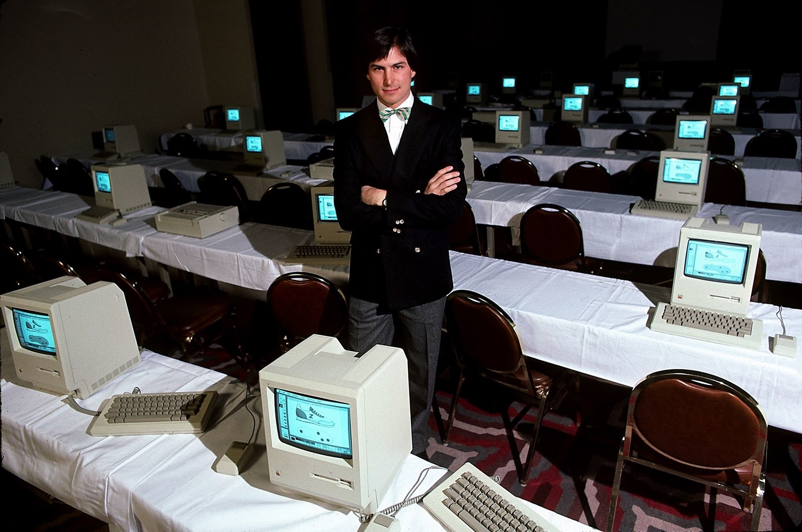

Photograph by Jonathan Elderfield / Liaison / Getty
Today, for better and for worse, the Internet is a part of all of our lives. But it wasn’t always so. This week, we’re bringing you pieces from the early days of tech culture, when going online was a novelty and kids still played outside. In My First Flame, from 1994, John Seabrook describes his first experience with online insults and trolling (in any other medium, these words would be, literally, unspeakable
); he also undertakes an electronic correspondence with Bill Gates, in E-Mail from Bill. (We were intimate in a curious way, in the sense of being wired into each other’s minds, but our contact was elaborately stylized, like ballroom dancing.
) In Virtual Love, from 1997, Meghan Daum experiments with Internet dating, despite not being what most people would call a
John Heilemann, John Cassidy, and Michael Specter offer early profiles of Steve Jobs, Mark Zuckerberg, and Larry Page and Sergey Brin, respectively. Erik Larson recounts the story of iVillage, the Internet company whose two female co-founders, Nancy Evans and Candice Carpenter, became unimaginably rich through an I.P.O., despite being computer person.
neither
signalling a new era in tech. Lauren Collins explores a new form of self-expression—the clever naming of one’s Wi-Fi network. Nicholson Baker uses a Kindle for the first time and wonders if a device could ever be better than a book. Finally, in a Talk of the Town story, from 1977, Anthony Hiss visits an acquaintance in California with a new hobby: assembling his own personal computer. Eventually, his acquaintance predicts, people will Web heads
nor computer geeks,start hooking their machines in with their friends’ machines, and people will get on nets of computers, which could mean you could vote or buy something while sitting at your own computer keyboard.
He notes that if the electricity fails, the kids will be in trouble.
He didn’t know the half of it.
My First Flame

Photograph by Jonathan Elderfield / Liaison / Getty
I got flamed for the first time a couple of months ago. To flame, according to
Que’s Computer User’s Dictionary,
is to lose one’s self-control and write a message that uses derogatory, obscene, or inappropriate language.
Virtual Love

Photograph by James Keyser / The LIFE Images Collection / Getty
Thanks to the computer, I was involved in a well-defined courtship, a neat little space in which he and I were both safe to express the panic and the fascination of our mutual affection.
The Perceptionist
Photograph by Michael L. Abramson / Getty
Steve Jobs’s mastery of perception has long been known to his allies and his detractors alike as his
reality-distortion field
—an uncanny ability, through enthusiasm, charisma, and intimidation, to make people see what he wants them to see.
Me Media
The growth of sites like Facebook and MySpace reflects a dramatic shift in how young people view the Internet.
The Tao of Wi-Fi
Wireless names can act as welcome mats, luring their beholder into a store or a discussion, or as gargoyles, patrolling a patch of virtual turf.
Free Money
A company as ethereal as air, with deep losses, few physical assets, little proprietary technology, extravagant rates of spending, a high employee
burn rate,
and powerful emerging competitors, had accomplished one of the most successful I.P.O.s ever.
A New Page

Photographs by Gus Powell
Here’s what you buy when you buy a Kindle book. You buy the right to display a grouping of words in front of your eyes for your private use with the aid of an electronic display device approved by Amazon.
Search and Deploy
At the age of twenty-seven, Lawrence Page runs—with a fellow former Stanford graduate student, Sergey Brin—a small company, based in Mountain View, California, named Google, which has become the default search engine of the digital in-crowd.
E-Mail from Bill

Photograph by Alan Levenson / The LIFE Images Collection / Getty
Sitting at my computer one day, I realized that I could try to communicate with Bill Gates, the chairman and co-founder of the software giant Microsoft, on the information highway.
Bytes and Chips
In just a matter of weeks, a couple of men in their twenties from Los Altos, California will start selling Apple II—a fully assembled briefcase-size unit, with a large memory and a keyboard, that can play any number of computer games, draw pictures on your color TV, and operate like any other computer.